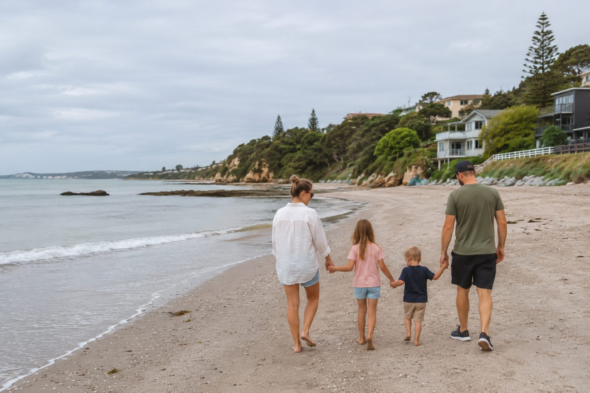

Moving with your family
Whether your partner can work, what childcare costs, which school your children can attend, and how it all works if you’re doing it on your own. It’s all here.
Children travel further than we give them credit for
It’s one of the longest flights there is, and most parents dread it more than any other part of the move. In our experience it’s the bit families remember least — the settling afterwards is what stays with them.
Children take their cue from you. If the move is framed as an adventure and the practicalities are quietly handled in the background, most children adapt remarkably quickly, often faster than the adults. This guide walks through both halves: getting there in one piece, and helping everyone feel at home once you’ve arrived.
If there’s one thing to hold onto, it’s this: a few unsettled weeks are completely normal and almost always temporary. Wobbles, clinginess and the odd tearful evening don’t mean you’ve made the wrong decision, they mean a small person is doing something brave.
Can my partner work?
Two salaries or one changes what you can afford and where you can live. It often shapes how the person coming with you feels about going at all.
The short version: your partner’s right to work comes from your visa rather than from a job offer of their own, and what they are permitted to do depends on the route you are granted, the role you hold and the conditions attached. That is why the honest answer is never a flat yes or no, but check it against the route you are actually on — and check it before you accept, not after.
Yours, not theirs
A partner’s work rights follow from your visa and the terms of your job. Move from a work visa to residence and their position changes with it.
Read the conditions on the visa you are granted, not the one you applied for.
A separate question entirely
Permission to work and recognition to practise are two different processes. Regulated professions run through the New Zealand regulator for that field; for everything else, recognition of an overseas qualification is judged by employers or assessed by NZQA.
Start it early. Assessments take longer than anyone expects.
Budget the first months on one income
Even with full work rights, job-hunting while unpacking, enrolling children and learning a new city takes time. Families who plan for one income and are pleasantly surprised do far better than families who plan for two.
Two registrations, two timelines
Theirs may well be the longer one. Run both from the start rather than in sequence — a second timeline discovered late is the most common reason a family ends up arriving months apart.
Check their pathway alongside yours.
What to settle before you accept
Ask the employer which visa they intend to support and what conditions come with it. Ask what help, if any, extends to a partner. Then have the honest conversation at home about what six months on one income looks like. None of this is awkward at the offer stage; all of it is expensive later.
Visa rules are set and changed by government, so we point you at the source rather than paraphrasing it: Immigration New Zealand. We will talk through what your route means in practice, and we will tell you when a question needs a licensed immigration adviser rather than us. See also visas and immigration.
Childcare, honestly
Two things surprise people: the vocabulary is different, and the binding constraint is places rather than price. In the popular suburbs the waiting list is the problem, and it starts long before you land.
Learn the names
Early childhood education covers several quite different things: education and care centres open across the working day, kindergartens often running school-like hours, home-based educators caring for a few children in their own home, and kōhanga reo, where the day is conducted in te reo Māori. They differ in hours, cost and character, not just in name.
Join waiting lists before you fly
You can enquire and be listed from overseas. Do it as soon as you have a suburb in mind, and list at more than one centre. A place you do not need is easy to decline; a place that does not exist is not.
Check the funding against your own visa
Government funding reduces what families pay for early learning, and there are separate subsidies for lower-income households — but eligibility can depend on your child’s residency or visa status, so confirm your own position before you budget on the subsidised figure. This is the single most expensive assumption we see families make.
Test it against a clinical roster
Standard centre hours were not designed around a 7am start or a late finish. Ask about the earliest drop-off and the latest pick-up, ask what happens when you are held past handover, and plan for the gap — a home-based educator or a nanny share often covers what a centre cannot.
Official source: Ministry of Education — early learning for how it works and what is funded. For school-age children, schools and education covers enrolment zones, the school year and settling in.
Moving as a single parent
Almost everything written for families quietly assumes a second adult. Plenty of single parents make this move, and the ones who found it manageable tell us very little came as a surprise.
Two things need handling early, and both are easier to do at home than from the other side of the world.
Consent to take a child abroad
Where someone else holds guardianship or parental responsibility, you will generally need their written consent or a court order — and it can be asked for twice: once by the visa application, and again by an airline or a border officer. Get it in writing, get copies certified, and carry them in your hand luggage rather than the shipping container.
- Full birth certificates showing both parents, not the short form.
- Any parenting, guardianship or custody orders, certified.
- A signed consent letter with the other parent’s contact details, or evidence of sole responsibility.
- Where a parent has died, the death certificate.
- Immunisation records and medical notes, which schools and clinics will ask for.
Childcare is the line that decides it
Work the numbers on your own salary with care included at full price, and check the funding question above before you rely on it. The first three months are the most expensive of the whole move.
Build the network before you need it
Before and after-school care, school-holiday programmes, a neighbour, and one colleague who will swap a shift. Set these up in the first fortnight, not the first emergency.
Negotiate it before you accept
Nights, weekends and on-call are a different proposition without another adult at home. Say so at offer stage — it is a normal conversation, and a far harder one to start once you have arrived.
Longer than you are used to
The long summer break falls over Christmas and the New Year, exactly when a new arrival has no family nearby and holiday programmes book out early. Check the term dates before you plan your leave for the year.
Tell us your situation early and we will sequence it with you — what to gather, in what order, and who actually decides. Consent and documentation requirements are set by government: see Immigration New Zealand, and talk to us if you would rather work through it with someone.
Preparing the children for the move
The weeks before you leave tend to do more for a smooth landing than anything on the day itself — the familiar things a family can line up in advance.
Talk it through, often
Share the news in good time and keep the conversation going. Look at photos and maps of where you’re heading, watch videos together, and let them ask the same questions as many times as they need to.
Picture the new life
Explore the new town online, find the local playground or beach, and if you can, look at their school’s website together. The more they can imagine the everyday, the less frightening it feels.
Let them say farewell
A proper goodbye matters. Help them mark leaving friends, family and a familiar home, a small party, a memory book, swapping addresses, so the move feels like a beginning, not a loss.
Keep one comfort close
A favourite toy, blanket or pillow should travel in the hand luggage, never the hold. Familiar things are anchors when everything else is new.
Plan to stay connected
Reassure them that grandparents and friends are a video call away. Knowing the people they love haven’t disappeared makes the distance much easier to bear.
Involve them in packing
Let older children choose a few of their own things to bring. A little ownership over the move turns something happening to them into something they’re part of.
Sort documents & health
Carry passports, visas, and copies of immunisation records, medical notes and any prescriptions in your hand luggage, you may need them sooner than you think.
Surviving the long flight
It’s usually 24 hours or more with at least one stop. Airlines see families every day, and most parents tell us the planning is what turned it from an ordeal into a story.
Consider a stopover
A night’s stopover en route (common stops include the Gulf, Singapore or Australia) can split an overwhelming trip into two manageable ones and let small bodies stretch, sleep and reset.
Tell the airline early
Request bassinets, children’s meals and seats together when you book, and use family boarding. Cabin crew are well used to travelling children and will lend a hand if you ask.
Pack a bag of surprises
Snacks, headphones, downloaded shows, and a few small wrapped activities handed out across the hours work wonders. Novelty buys you precious quiet stretches.
Dress for sleep
Comfy layers and familiar pyjamas signal bedtime even at 35,000 feet, and layers cope with cabins that swing from warm to chilly.
Ease little ears
Feeding, a drink or a chew during take-off and landing helps with pressure. Pack more nappies, wipes and spare clothes than feels sensible.
Go gently on jet lag
Nudge towards local time over the first few days with daylight, fresh air and patience. Expect early starts and odd-hour wakings for a week or so.
Lower your own bar
Screen-time rules and perfect manners can take the week off. Your only job on the plane is to arrive: everyone, frazzled but together.
The first 48 hours
You’ll arrive tired, possibly at a strange hour, into a brand-new place. Keep the first couple of days deliberately small. There’s nothing to achieve yet except rest, food and a gentle first look around.
Rest first
Don’t fight the jet lag with a packed schedule. Let everyone sleep, eat simply, and surface slowly. The to-do list can wait a day or two.
Find the everyday
A trip to the local supermarket, park or beach in the first day or two makes the new place feel ordinary and knowable, fast, for children especially.
Recreate small routines
The familiar bedtime story, the same breakfast, the favourite cup. Tiny rituals carried from home are how children feel safe somewhere new.
The first few weeks
Once the jet lag lifts it becomes gentle, steady work: a rhythm, school or early learning, and time for them to make this place their own.
Get into school soon
Routine and friends are the fastest cure for homesickness, so enrol and start school or early childhood education sooner rather than later. Our education guide walks through how it works.
Say yes to invitations
Playdates, birthday parties, the local sports club, the swimming lessons: these are where Kiwi childhood friendships form. Accepting invitations, for parents too, is how a family puts down roots.
Expect the wobble
A few weeks in, the novelty fades and the missing-home feelings can arrive, for children and adults alike. It’s a normal stage, not a setback. Keep routines steady and it passes.
Saturday morning sport
For a lot of New Zealand parents this is the rite of passage: an early start, a thermos or a coffee from the club rooms, and an hour on the sideline talking to people whose children are the same age as yours.
Rugby, football, netball
Junior grades start young and run on Saturday mornings through the winter terms, organised by local clubs rather than by schools in most places. Subs are usually modest, and second-hand boots circulate freely.
Swimming, cricket, athletics
Swimming lessons are close to universal — with this much coastline, learning to swim is treated as a life skill rather than a hobby. Cricket, athletics and touch fill the summer terms.
Gymnastics, dance, scouts
Gymnastics, dance, martial arts, Scouts and Guides all run in term time, most of them within a short drive. School newsletters are where these are advertised, so read the first few properly.
Worth knowing for a first term: sign-ups tend to happen in the weeks before a season starts rather than during it, and most clubs are run by parent volunteers — which is also why the sideline is where people get to know each other.
Settling, age by age
A toddler, a school-age child and a teenager experience the same move in completely different ways. Knowing what to expect, and what helps, at each stage takes a lot of the worry out of it.
The portable ones
0–4The easiest to relocate and the quickest to settle: their world is you. Protect sleep and feeding routines, keep their comfort items close, and they’ll be at home wherever you are within days.
The fast adapters
5–10Usually settle within weeks. Friendly, outdoor, sporty New Zealand classrooms make friends easy to come by. Children this age often adapt before their parents have unpacked the last box.
The ones to watch
11–13Old enough to feel the loss of friends keenly, young enough to make new ones readily. Help them stay in touch with old friends while gently encouraging clubs and activities that build new circles.
The ones who need a say
14+Moving at a decisive age is hard, and they need more time and more involvement. Bring them into decisions, take homesickness seriously, and give the first term or two before judging how it’s going.
Moving with your family: the questions to settle first
The career can be right and the move still wrong for the people coming with you. These are the questions that decide whether it adds up, settle them before you fall for a suburb.
We’re recruitment specialists, not licensed immigration advisers, and none of this is immigration, tax or financial advice. Visa conditions and eligibility rules change, so confirm the current position with Immigration New Zealand and the schools themselves before committing.
Looking after yourself, too
It’s a quiet truth of moving with children: you’ll pour everything into settling them and forget to settle yourself. But a calm, supported parent is the single biggest thing a child needs to feel safe somewhere new.
Give yourself permission to find it hard. You’re holding down a new job, running an unfamiliar household and being everyone’s reassurance, often without your usual support network nearby. That’s a lot. Build your own footholds early: say yes to the school-gate chat, find one or two other parents, and lean on the communities who’ve made the same move. You don’t have to do it perfectly, and you certainly don’t have to do it alone.
If you ever feel you’re struggling more than seems normal, reach out, to your GP, to a helpline, or to us. Asking for support is part of doing this well, not a sign you’ve got it wrong.

I’ve sat with so many parents who lay awake over this exact question, the flight, the schools, whether they’re doing the right thing by their children. Here’s what I’ve seen, again and again: the kids are usually fine, and often more than fine. They make friends at the park, they take to the outdoors, and within a term this is home. My honest advice is to look after yourselves as carefully as you look after them, the calmer you are, the faster they settle. And lean on us. Pointing families towards the right school, the right neighbourhood and the right people is one of the parts of this work I love most.
SophieCEO & Founder, Ethicare Resourcing
The questions parents ask us
When’s the best time of year to move with school-age children?
The New Zealand school year runs from late January to mid-December, so arriving around the start of the year lets children begin with everyone else. That said, schools take new arrivals throughout the year and are well practised at it, the right time is mostly the one that fits your job and visa, so don’t force it to line up perfectly.
How long until the children really settle?
Every child is different, but a common pattern is an exciting first few weeks, a dip as the novelty fades and home is missed, and a gradual settling over the following months. Younger children often feel at home within weeks; teenagers may need a term or two. Steady routines and getting into school quickly are the things that help most.
What about childcare while we’re both finding our feet?
New Zealand has a well-established early childhood education system, kindergartens, daycare and home-based care, and government funding subsidises hours for children aged three to five, so it’s more affordable than many expect. It’s worth researching and contacting providers before you arrive, as popular centres can have waitlists.
Can you help us choose where to live with the family in mind?
Absolutely, it’s one of the most useful things we do. Tell us your children’s ages, what matters to your family and any schools you’ve got your eye on, and we’ll help you weigh up neighbourhoods, school zones, commutes and the everyday feel of an area before you commit to anywhere.
Related guides
Moving the whole family?
Tell us who is coming with you and where you’re thinking of settling, and we’ll help you plan a move that works for everyone — your partner’s work, childcare or schools, the timing, the journey itself, and the soft landing on the other side.
Ethicare Resourcing · your guide to a life and career in New Zealand.